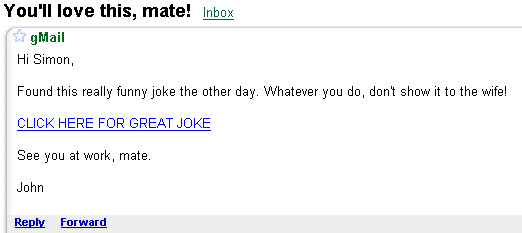

All about SpyWare

What is Spyware?
Broadly speaking, Spyware is something that sneaks on to your computer,
usually with the intentions of extracting money from you. At its worst,
Spyware can take control of your computer, directing you to web pages
you didn't want to go to, downloading other nasty stuff in the background,
and even harvesting email address, passwords and your credit card details.
But even a mild case of Spyware infection can be nuisance.
If you've ever been plagued by annoying pop-ups when your computer
loads, or have strange new icons where your clock is (bottom right, called
the System Tray), or if you're directed to a strange webpage when you
try to go on to the internet, then you may well be infected.
Spyware, in the main, gathers information about you and your online
habits, and sends that information to third party. And all without asking
for your permission!
Where does Spyware come from?
Spyware can come from a whole host of different sources. But Spyware
mainly gets on to your PC through deception. For example, suppose you
receive this email:

You'd assume that this email was sent to you in error.
Can you resist clicking on the link? After all, what harm can it do?
Well, a lot actually! There well may be a joke on the site, but there's
something less funny going on in the background - the web page is trying
to sneak something on to your PC! You may also have seen a harmless-looking
popup window asking you to click a button to proceed. You'll click it
anyway, just to get rid of it. Clicking OK is what's infected your PC!
Other sources of Spyware infection are freeware or shareware software,
an operating system that is un-patched and hasn't got the latest security
software, downloading stuff from peer-to peer applications - the list
is long!
And don't think your Anti-Virus software will protect you - it won't!
Spyware is not considered to be a virus, so your Anti-Virus software
won't spring in to action once an infection takes place - it will stay
sleeping in the background, unaware that anything malicious is going
on. The best tool for the job is a dedicated Spyware Detection system.
Beware of the Scam Merchants!
You may have come across a website that promises to check your PC for
Spyware infection. All for free. All you need to do is to click a button
to scan your PC. So you download, scan, and lo and behold - it's found
something! Then up pops a message directing you to a website that lets
you buy the software.
Except, it didn't really detect anything. Or if it did, it's what's
know as a false positive (Something that sounds dangerous but isn't).
The job of the scan is to scare you into buying their software.
If you type in "Spyware detection" into Google, most of the
results that come back are for these types of programmes. According
to Suzi
Turner, writing on Zdnet
, some of the most popular Spyware scams are these products:
- SpyAxe
- SpySheriff
- PSGuard
- WorldAntiSpy
- Spy Trooper
- Razespyware
- SpywareNo or SpyDemolisher
- WinAntiVirus or WinAntiSpyware 2005
- SlimShield tied with "Winhound Spyware Remover"
- Spyware Bomber (shut down by the FTC)
Hopefully, you haven't bought anything on the top ten list! Even if
you haven't, check out the alarmingly long list of scam Spyware on spywarewarrior.com
(Fortunately, they also have a good-software list!)
If you've bought any of the software on the bad list then the protection
you have is at no protection at all. At worst, these pieces of software
can be incredibly difficult to get rid of - Spyware themselves!

How to get Rid of Spyware
As a computer owner, you really need your wits about you in the Spyware
detection game. So what are you to do if you can't even trust the very
people who say they are going to help you clean your PC? Well, you can
fight back! The best way to do that is with software from very reputable
companies. The following are the most well-known (and free) anti-spyware
solutions:
Ad-Aware is probably the easiest to use of the three. SpyBot is good,
but a bit complex for beginners. Microsoft Windows Defender
is well worth getting, too. However, it's not the easiest piece of software
in the world to use. You do get some good tools with it, though. Check
out the websites by clicking the links above (there's a tutorial on
the Microsoft site for Windows Defender).
Once you download your chosen anti-spyware solution, you need to install
it on to your PC. After you have installed it, start the software and
do a full scan of your computer. (Ad-Aware has a nice big button that
says "Scan"!)
Unlike anti-virus software, it IS recommended that you have more than
one anti-spyware solution on your PC. This is because spyware can be
very difficult to get rid of, and anti-spyware software will rarely
find 100 percent of threats. By having more than one solution, what
one piece of anti-spyware programme misses, the other should (hopefully)
pick it up.
Move on to the next Guide -->
<--Back to the
Beginner's Computing Contents Page
View all our Home Study Computer
Courses
 home
home